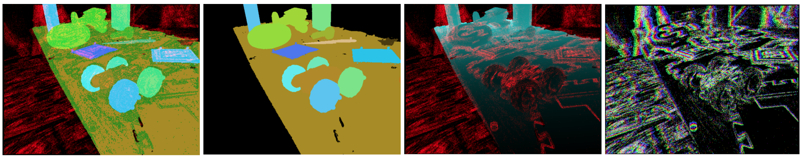
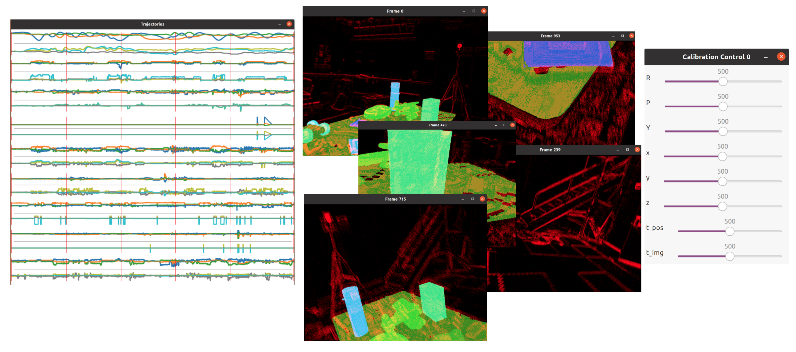

Raw Sequence Inspection
This page describes how to use the offline tool for visualization of a raw recording’s sequence folder. How to launch, and what parameters the offline tool accepts, is described in the offline generation tool page.
Visualization modes
Two kinds of visualization are currently supported:
_show:=-2
A frame-by-frame visualization (with a scroll bar to go through the dataset frames). Rendering modes can be changed by pressing keys 1-4.
The visualization code is here.
 From left to right (keys 1-4): mask with events overlaid, mask, depth with events overlaid, events color-coded by their timestamp.
_show:=<any positive integer>
A multi-frame visualization. The sequence cannot be scrolled through, however multiple frames can be seen at once, the trajectory plots are shown, and the manual calibration window is made available.
Note: the rotation component in trajectories is plotted in Euler angles, and angles can ‘roll over’ from -pi to pi during the full turn.
The visualization code is here.
 From left to right: Trajectory plot with red vertical lines at the timestamps of rendered frames. Visualized frames at the times of the red vertical lines. Manual calibration window.
Keyboard Shortcuts
Relevant (code)
Key |
Description |
|---|---|
|
Exit the application |
|
Display mask, events or mask, and rgb image |
|
Display mask |
|
Display depth and events (without rgb overlay) |
|
Display events color coded by the timestamp position with a slice |
|
Switch to next rendering mode (1/2/3/4) |
|
Decrease event slice width |
|
Increase event slice width |
|
(experimental) Increase window for Vicon pose smoothing (default 0) |
|
(experimental) Decrease window for Vicon pose smoothing (default 0) |
|
Reset extrinsic calibration sliders to mid value (sliders only available in multi-frame mode) |
|
Write the calibration (extrinsic or time offset) to the sequence’s camera folder |
|
(frame-by-frame mode only) Move one frame forward |
|
(frame-by-frame mode only) Move one frame backward |
|
(frame-by-frame mode only) Render a 3d pointcloud (experimental, additional controls) |